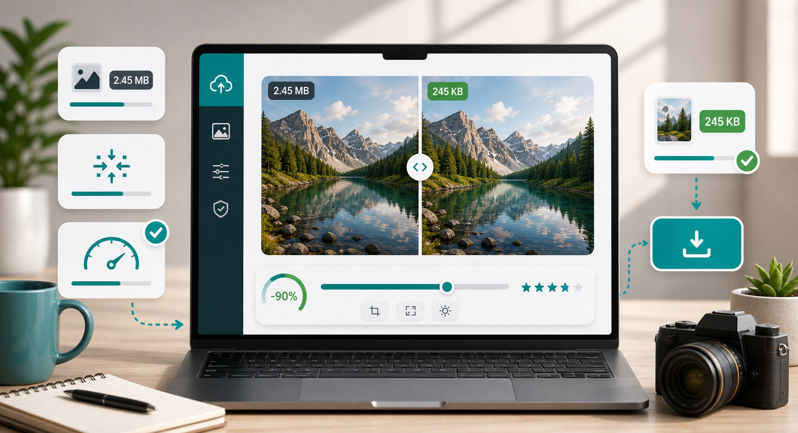

Image compression
How to compress an image online without making it look bad.

Most people only think about image compression when a website refuses their upload or a page feels painfully slow. Then the quick fix is to drag the file into any compressor, download whatever comes out, and hope it still looks fine. Sometimes it does. Sometimes faces become waxy, product edges look fuzzy, or a screenshot turns into a muddy mess.
A better approach is to start with the final use of the image. A hero photo for a website, a passport-style upload, a marketplace product image, and a WhatsApp share do not need the same settings. For web pages, you usually want a balance: small enough to load quickly, but clear enough that visitors do not notice the compression. For forms, you may care more about meeting the size limit than preserving every tiny detail.
First, resize before you chase extreme quality settings. A 4000 pixel wide phone photo is usually far larger than needed for a blog post or upload form. Try 1600 to 1920 pixels wide for general website use, 1200 pixels for many social posts, and 800 to 1000 pixels for strict form uploads. Reducing dimensions often saves more file size than lowering quality too far.
Next, adjust quality gradually. For JPG photos, 70 to 80 percent is a sensible starting point. At that range, many images look almost the same to normal visitors but weigh much less. If the file still needs to be smaller, move down in small steps. Once you go below 55 or 60 percent, check faces, text, gradients, and detailed backgrounds carefully.
For PNG files, ask whether you truly need PNG. Screenshots, graphics, and transparent images can be PNG for a reason, but many non-transparent PNGs become much smaller as WebP. If the image is going on a modern website, WebP is often the better output. If you need transparency for a logo or overlay, test the result before replacing the original.
Finally, compare before and after at the size people will actually see. Do not judge a compressed image only by zooming to 300 percent. That can make harmless compression look terrible. View it at normal page size, then check important areas such as text, product details, and skin tones. If those still look clean, the compression has done its job.
It also helps to name the compressed file properly before you upload it anywhere. A filename like blue-running-shoes-compressed.jpg is more useful than IMG_4829.jpg, especially for website owners. Clear filenames make media libraries easier to manage, and they can support image SEO when the image is part of a public page.
Be careful with "maximum compression" buttons. They sound convenient, but they often make the decision for you without knowing the image's purpose. A recipe photo, a scanned certificate, and a product listing all deserve different treatment. If an image contains important text, compress more gently. If it is a background photo that sits behind a dark overlay, you can usually compress more aggressively.
For batches, use the same settings only when the images will be used in the same place. A folder of product thumbnails can share one width and quality level. A mix of banners, portraits, and document scans should be handled in smaller groups. That extra minute prevents the common problem where half the files look fine and the other half look over-processed.
With CompressPixel, the practical workflow is simple: open the free image compressor, upload the image, choose a preset or width, start around 72 percent quality, and download the result. If you are working with a photo, the JPG compressor is a good starting point. If you are dealing with screenshots or graphics, read our guide on whether to compress PNG or convert to WebP. Because the compression runs locally in your browser, it is quick and private for everyday files.
Sources and further reading
- Google Image SEO best practices notes that image context, filenames, and page quality help Google understand images.
- web.dev on Largest Contentful Paint explains why the largest visible page element, often an image, matters for perceived speed.